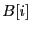
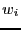
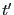
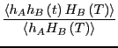

Next: Sampling the Transition Path
Up: Rare Events: Path-Sampling Monte
Previous: Fundamentals
In this section, we briefly recapitulate the presentation of the
transition path sampling method given in Ref. [18]. Accordingly,
we will switch notation a bit. We will call the indicator function ,
and call a state point at time  :
:
 |
(280) |
We consider the correlation function which measures the likelihood of
finding the system in state  at time provided that it was in
state
at time provided that it was in
state  at time 0. Now, for extremely long times,
at time 0. Now, for extremely long times,  approaches
the probability to find the system in state B at equilibrium,
regardless of the system starting point (i.e., ergodicity is
realized). These must correspond to times much longer that the
reaction time
approaches
the probability to find the system in state B at equilibrium,
regardless of the system starting point (i.e., ergodicity is
realized). These must correspond to times much longer that the
reaction time  . For times approaching ,
approaches
exponentially:
. For times approaching ,
approaches
exponentially:
 |
(281) |
Recall that
. When this
time is greater than the short-time-scale molecular relaxation time,
,  is a linear function of time:
is a linear function of time:
The reactive flux, displays a time-independent plateau
in this regime which is equal to  .
.
One should realize that can be computed from a single molecular
dynamics simulation, in principle. However, if the system dynamics is
subject to rare event transitions, it may not be possible in practice
to simulate long enough to achieve a statistically relevant value of
. Transition path sampling is meant to overcome this limitation.
Let's consider writing as an explicit ensemble average over
the equilibrium phase space probability distribution,
:
Now, an insight of Dellago and Chandler is that, because both the
numerator and denominator of Eq. 284 are partition
functions, the log of can be interpreted as a free energy
difference between two systems:
So, the log of is the free energy price one must pay to constrain
the endpoint of a dynamical path of length which starts at time 0 in
region inside state . This means that we can use (in principle) any
free energy method to compute . Dellago and Chandler chose umbrella sampling.
To see why it is advantageous to use umbrella sampling, we must first
imagine an order parameter
which
indicates when we are in region in the following manner:
We now ask, how probable is it to find the system with a particular value
of the order parameter,  , at time ? We can express
this probability distribution as an ensemble average by visiting each
phase space point at time 0,
, at time ? We can express
this probability distribution as an ensemble average by visiting each
phase space point at time 0,  , and asking does this point initiate
a dynamical trajectory that lands at order parameter at time ?
, and asking does this point initiate
a dynamical trajectory that lands at order parameter at time ?
Here,
is the Dirac delta function. Because
region corresponds to an interval of ,
is an integral of
 :
:
Because transitions from to are rare,
in region is small for relevant values
of time, and we can't compute it directly. So, we divide phase space
into neighboring overlapping regions :
Each region is defined by
Neighboring regions must overlap ``a little''; i.e.,
. The size of the overlap will be considered in a bit.
Now, the distribution of in each window is
Notice that
acts like a Boltzmann factor for an umbrella potential, :
And we are computing this probability distribution in window  using
a phase space distribution whose Hamiltonian is modified by ;
e.g.,
. This means when we conduct a
particular MC run, we sample only within one window .
using
a phase space distribution whose Hamiltonian is modified by ;
e.g.,
. This means when we conduct a
particular MC run, we sample only within one window .
The key aspect of umbrella sampling is that, inside window :
This is because the denominator of
counts
only those paths that end at in , while the denominator of
counts all paths that end in state .
This proportionality is important, because it means that one can
compute
for each window separately
using MC simulations, and then match the resulting distributions
(tabulated as histograms over ) in the overlapping regions,
and then renormalize the entire distribution to produce
. Each MC simulation performs the
appropriate random walk focused in its window, and thus
maximizes the statistical significance of the results obtained in each
window.
Finally, when we have
, one must only
integrate over the appropriate values of to obtain .
The notion of a ``path ensemble'' comes from interpreting
Eq. 291 as an average of the quantity
over a
distribution
.
is the distribution function of all
initial states whose trajectories lead exactly to state
in time .
is a weighted average over
these ``paths.''
is therefore called a
``path ensemble.'' The average of any quantity
in this ensemble,
is called a ``path average.''
|
|
A schematic of the first transition path ensemble,
.
|
|
Let's take stock: We know that . In order for  to be a
constant, we need to ensure that is linear in time, meaning we
must evaluate for many values of . Each evaluation of
is a ``free energy'' calculation, so getting at this way
may be prohibitively expensive. Another insight of Dellago and
Chandler [18] was to recognize that a simple
factorization of leads to an algorithm in which one need only
do a single free energy calculation. Consider:
to be a
constant, we need to ensure that is linear in time, meaning we
must evaluate for many values of . Each evaluation of
is a ``free energy'' calculation, so getting at this way
may be prohibitively expensive. Another insight of Dellago and
Chandler [18] was to recognize that a simple
factorization of leads to an algorithm in which one need only
do a single free energy calculation. Consider:
where both and  are in an interval denoted . For
notational convenience:
and
.
Next, we define a new indicator function as a property of the interval
:
which tells us if the trajectory begun at visits state at least once during the interval . Since if
for all
, and
otherwise, we can insert it into our factorized expression for :
 |
(296) |
(We've also multiplied and divided by
.)
If we stare at Eq. 297 long enough, we see that the quantity
|
 |
 |
(297) |
| |
 |
|
(298) |
is an average of over the distribution function
This is the ensemble of all paths that begin in and visit at least once in the interval . (It therefore differs from
.)
|
|
A schematic of the second transition path ensemble,
.
|
|
Using this notation to denote averaging
over this ensemble,
 ,
,
We can efficiently calculate
 by
sampling
in a single simulation.
can be calculated from a single free-energy
umbrella-sampling calculation. This provides a recipe for obtaining
:
by
sampling
in a single simulation.
can be calculated from a single free-energy
umbrella-sampling calculation. This provides a recipe for obtaining
:
- Perform path sampling on
to obtain the
function
on . If
does not display a
plateau, repeat with a larger value of
 .
.
- Choose a time (which can be much less than ) and compute
by umbrella sampling to get
by integration of Eq. 288. Because of step 1,
is known.
- Calculate .
- Calculate as
Next: Sampling the Transition Path
Up: Rare Events: Path-Sampling Monte
Previous: Fundamentals
cfa22@drexel.edu